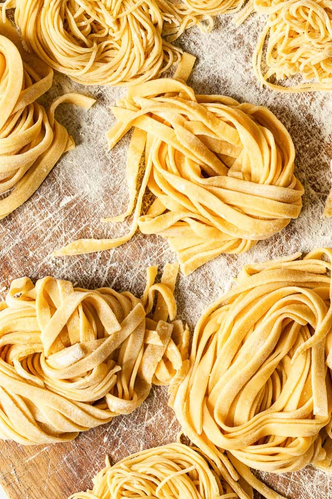

Home
Homemade Pasta

Description
This recipe will teach you how to make homemade pasta!
Making homemeade pasta is easy, fun and delicious
you will want to make it everytime you have a pasta dish.
This recipe pairs well with the pesto recipe as well.
Enjoy!
Ingredients
- 1 cup all-purpose flour
- 1/2 teaspoon salt
- 1 egg, beaten
- 2 tablespoons water
Directions
- Gather all Ingredients
- Combine flour and salt in a medium bowl.
Make a well in the center and add beaten egg.
Mix well until stiff dough forms, adding up to
2 tablespoons water if needed.
- Knead dough on a lightly floured surface util smooth,
3 to 4 minutes. Wrap dough let rest for 30 minutes to 1 hour.
- Roll dough by hand or with a pasta machine to desired thickness,
then cut into strips of desired width and length